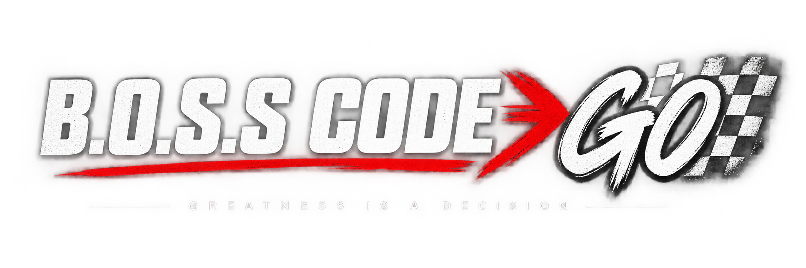

DECISION MAKERS
COURSE BUILDER
Build courses, phases, days, lessons, media and prompts without touching code.
GET STARTED
SELECT A COURSE
Choose a course on the left or create a new one.
Enter the same ADMIN_KEY used by your B.O.S.S CODE GO Admin and Reports pages.

Build courses, phases, days, lessons, media and prompts without touching code.
Choose a course on the left or create a new one.